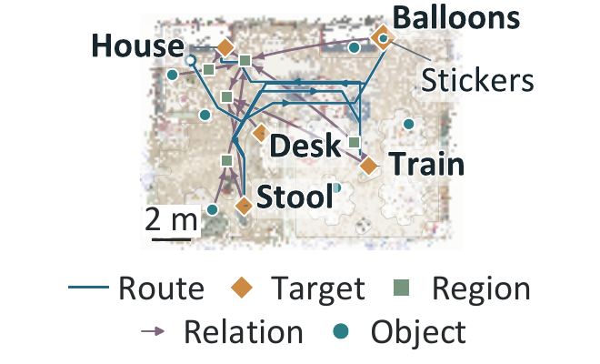

Tool granularity blurs downward.
Thea's tools were policies. Here the model wrote motion segments against the SDK, so the harness must expose the body at several levels.
Revisited after GPT-6 Astra
Abstract. Thea carried the harness paradigm of coding agents into the physical world, adding the two things the physical world does not supply for free: a persistent readable world state and a verifiable judgment of each action. With GPT-6 Astra, a model can be handed a robot SDK inside an ordinary coding-agent environment. We revisit at what granularity it now controls the body, who supplies each harness component, the model, the coding harness, or something still to be built, and what changes and what remains.
In Thea the model chose among skill-level tools, pick, place, navigate_to, each a learned policy or stack [12]. GPT-6 Astra changes the premise: a frontier model can now be handed the robot itself [13]. In October 2026 we gave it, running in a coding-agent environment (Codex), the Astribot S1 Python SDK and its documentation, with no Thea component present, and asked for four tasks with the left parallel gripper: tabletop cleanup, cleanup after a base approach, drawer retrieval and closure, and bowl transport (with a cube inside).
We observe the agent working below the pick-and-place interface: it registered head-camera RGB-D into the base frame, solved inverse kinematics numerically against the SDK's forward kinematics, screened joint samples for self-collision, sent one motion segment at a time, and drove the base with velocity pulses gated by lidar clearance.
Its first errors were geometric and self-corrected, and all four tasks reached their final states. Within this scope, learned manipulation policies were not needed: the model wrote the control stack Thea had put behind a tool.
The capability on display is not the model's alone: Codex supplied the loop, tool execution, files and the write-run-read-fix cycle. What it does not supply is anything specific to the physical world. We therefore read the runs through the components Thea had built, asking which the model already has and which it still lacks.
Three paired five-target SuperNav tasks, with one run per condition, a 500-action cap and a 1m arrival threshold.

Astra: no prescribed graph memory. Astra + SG: instructed scene-graph memory.
66.7% → 100%; three tasks per condition.
+42.3% relative mean SPL.
−14.0% total turns across three tasks.
Displacement <1 cm: 64/872 → 27/936 forward actions (−60.7% relative rate).
| Task | Condition | Completed | SPL | Actions | Turns | Path (m) | Forward <1 cm |
|---|---|---|---|---|---|---|---|
| 107 | Astra | No | 0.000 | 498 | 166 | 69.89 | 41 |
| 107 | Astra + SG | Yes | 0.724 | 470 | 124 | 82.89 | 0 |
| 186 | Astra | Yes | 0.705 | 436 | 123 | 70.29 | 23 |
| 186 | Astra + SG | Yes | 0.590 | 500 | 133 | 84.01 | 26 |
| 050 | Astra | Yes | 0.749 | 299 | 69 | 56.46 | 0 |
| 050 | Astra + SG | Yes | 0.756 | 277 | 51 | 55.94 | 1 |
The same three five-target tasks are compared, with one run per task and condition. Values below are Astra → Astra + SG.
How often the full task succeeds. A run must reach all five goals in order, each at a distance of less than 1m from an approved viewpoint, then issue STOP within the 500-action budget.
Calculation: Success rate (%) = 100 × successful runs / 3.
66.7% → 100%.
Success weighted by Path Length combines completion and path efficiency. For run i, Sᵢ is 1 for success and 0 otherwise; Lᵢ* is the benchmark's shortest reference route through all ordered goals, and Pᵢ is actual travelled distance, summed from consecutive XYZ positions.
Calculation: Mean SPL = (1/3) × Σᵢ₌₁³ [Sᵢ × Lᵢ* / max(Lᵢ*, Pᵢ)].
0.485 → 0.690. All three runs have equal weight; a failed run contributes zero.
The total number of left and right turn actions across the three runs. Each action rotates the agent by 30°; the chart counts actions, not degrees or a per-run average.
Calculation: Turns = Σᵢ₌₁³ [left turnsᵢ + right turnsᵢ].
358 → 308 turns.
The share of forward actions whose actual XYZ displacement is less than 1cm. Counts are pooled across the three runs, rather than averaging three run-level percentages. This measures translation, not a native collision flag.
Calculation: Rate (%) = 100 × forward actions with Δ < 0.01m / all forward actions; Δ = ‖position after − position before‖₂.
100 × 64/872 = 7.34% → 100 × 27/936 = 2.88%.
In LHPR-VLN [14] and SuperNav [15] without a scene graph, targets were re-localized from images and earlier sightings kept in conversation. With instructed graph memory, stored room and route records were reused.
Across the three paired SuperNav tasks, success rate rose from 66.7% without the graph to 100% with instructed graph memory, and mean SPL from 0.485 to 0.690 (+42.3%). SPL weights task success by the shortest-to-actual path length ratio, with failures scored zero.
We examine whether the model's own judgment of outcomes is enough (evaluator).
In the Revo2 cup-grasping trials, SDK motion completion did not imply a successful grasp: the wrist rose while the cup stayed on its support. The agent checked post-action images, rejected unsuccessful lifts and adjusted its grasp. These were task-specific checks of unmeasured accuracy, not an independent evaluator.
We examine whether the model adapts to a new body and its constraints (embodiment profile).
The agent found that the installed collision model still described a parallel gripper rather than the Revo2 hand. Human-prompted geometry checks gave local per-finger landmark RMS errors of 1.35–2.20 mm with a fixed hand shape, versus 5.26 mm overall after slight finger closure. Calibration for one hand shape did not guarantee accuracy after closure.
We examine whether experience becomes reusable skills (skills and memory).
Modules written for the first task (capture, localization, IK, screening) were reused in the other three, accumulating as files in the workspace.
After Astra, we re-examine the harness for what has changed and what has not. The two gaps have not: the runs still had to re-sense the world and judge their own outcomes. What changes is the responsibility the harness carries around them.
Thea's tools were policies. Here the model wrote motion segments against the SDK, so the harness must expose the body at several levels.
When the model emits poses directly, kinematic limits, workspace and calibration are no longer hidden inside a policy, and the profile becomes the layer on which zero-shot cross-embodiment rests.
A verified grasp policy carries part of its own safety. A raw pose command carries none, so permissions and sandboxes become workspace bounds, collision checks and force limits, and the lower the abstraction, the heavier this layer.
Digital self-improvement ran first because exit codes and unit tests existed [13]. The physical world has none, so Evaluation as Exit Codes must come first.
Additional navigation and Revo2 trials complement the paper's primary examples.
Astribot S1 · Revo2 right hand · Same empty plastic cup
The later trials show the same empty plastic cup progressing from unsuccessful lifts and a tilted grasp to an upright hold and a completed transfer. In the transfer, the cup stood upright after release and hand withdrawal, with no in-trial manual reset. The full recording retains 13 cuts across unrecorded intervals.